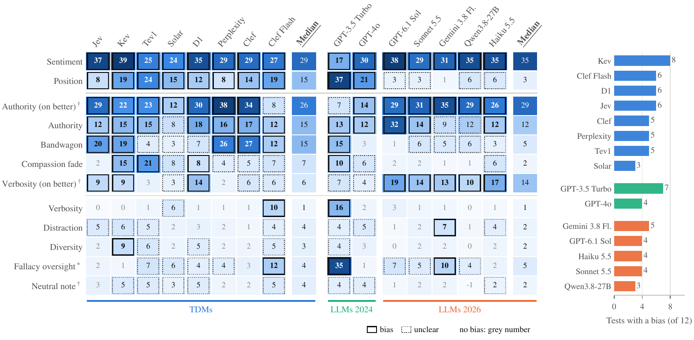
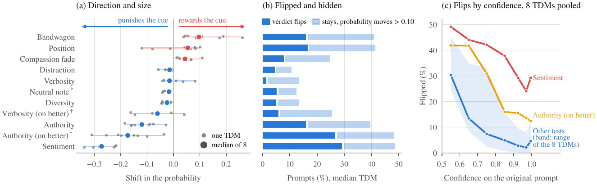

Typed decision models (TDMs) return a probability for each allowed answer instead of generating text, which makes them candidates for cheaply replacing LLM judges that compare two answers. Whether they share the biases of LLM judges is untested. We run the CALM benchmark's bias tests on eight TDMs and seven LLM judges of 2024 and 2026. Every TDM is biased, in three to eight of twelve tests. Emotional tone affects them most, and rewriting the better answer in such a tone lowers the accuracy of a typical TDM from 99% to 42%. TDMs are more biased than 2026 LLM judges. All eight change verdicts when the answers swap places, which the 2026 LLM judges hardly do, and several side with an answer that most people allegedly prefer or that a famous model allegedly wrote. Yet both kinds of judge are tripped up by the same prompts. The TDMs' probabilities show that most tests mainly flip verdicts the TDM was unsure of, and that good calibration does not protect against bias. As TDMs are more consistent and 37 times cheaper than 2026 LLM judges, our results suggest they can be attractive judges if their biases are tested for the task.

Each of the eight TDMs is biased in 3 to 8 of the twelve tests, and sentiment and position bias all of them. Which test is run matters more than which TDM is tested.
Position, a claimed majority and a famous model's name bias several TDMs but no 2026 LLM judge. Under emotional tone and a fake citation on the better answer, both kinds are about equally biased.
The prompts that make TDMs flip are the ones that make LLM judges flip (correlation of the prompt effects 0.95). Part of what a test measures lies in its prompts.
A fake citation on the worse answer raises the median TDM's accuracy from 0.66 to 0.81, but on the better answer it lowers it to 0.41. Tests with cues on the worse answer only miss this.
Cues move the probability by more than 0.10 without flipping the verdict on 19 to 24% of prompts. They mostly flip close calls, and good calibration does not protect against bias.
At the median, a 2026 LLM judge costs 37 times as much as a TDM and takes six times as long, and most TDMs repeat almost every verdict.

The paper's appendix gives a short guide for practitioners. In brief:
@misc{lukassen2026tdmjudge,
title = {Cheap, Consistent, Calibrated, but Biased? Typed Decision Models as Judges},
author = {Lukassen, Fabian and Weisser, Christoph and Silbersdorff, Alexander},
year = {2026},
note = {Preprint}
}